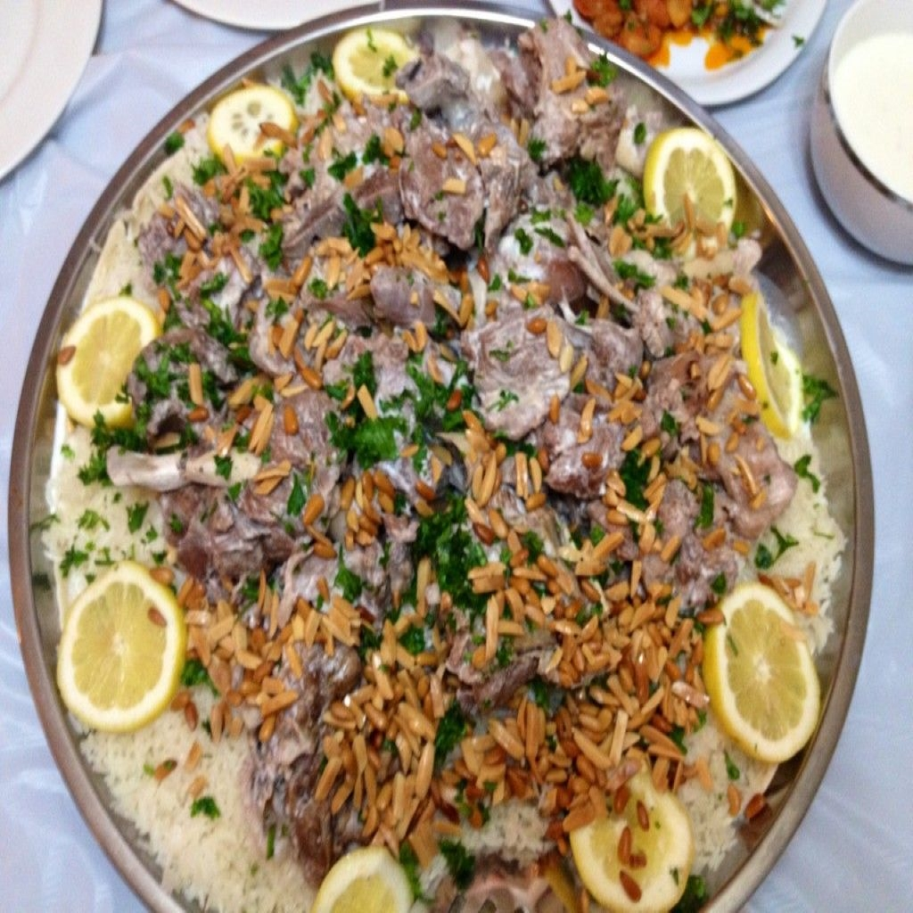

Palestinian Mansaf
Mansaf is a traditional Arab dish made of lamb cooked in a sauce of fermented dried yogurt and served with rice or bulgur. It is a popular dish eaten throughout the Levant. It is considered the national dish of Jordan, and can also be found in Kuwait, Saudi Arabia and Syria.
